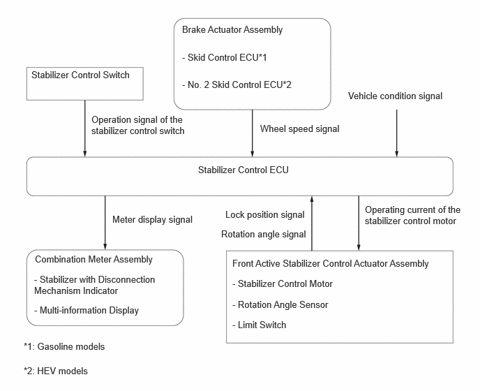

| Last Modified: 10-07-2025 | 6.11:8.1.0 | Doc ID: RM100000002K0NY |
| Model Year Start: 2024 | Model: Tacoma | Prod Date Range: [03/2024 - ] |
| Title: SUSPENSION CONTROL: STABILIZER WITH DISCONNECTION MECHANISM SYSTEM: STABILIZER WITH DISCONNECTION MECHANISM CONTROL; 2024 - 2026 MY Tacoma Tacoma HV [03/2024 - ] | ||
STABILIZER WITH DISCONNECTION MECHANISM CONTROL
FUNCTION OF MAIN COMPONENTS
|
Component |
Function |
|
|---|---|---|
|
*1: Gasoline models
*2: HEV models |
||
|
Stabilizer Control ECU |
Controls the stabilizer control motor (front active stabilizer control actuator assembly) based on the signals from each ECU and each sensor and the operation of the stabilizer control switch. |
|
|
Stabilizer Control Switch |
Sends the stabilizer control switch operation signals to the stabilizer control ECU. |
|
|
Front Active Stabilizer Control Actuator Assembly |
Stabilizer Control Motor |
Switches the front stabilizer bar to locked or to free based on the signal from the stabilizer control ECU. |
|
Rotation Angle Sensor |
Detects the rotation angle of the stabilizer control motor. |
|
|
Limit Switch |
Detects the lock position. |
|
|
Brake Actuator Assembly |
Skid Control ECU*1 |
Sends the wheel speed signal to the stabilizer control ECU. |
|
No. 2 Skid Control ECU*2 |
||
|
Speed Sensor |
Detects the wheel speed. |
|
|
Combination Meter Assembly |
Stabilizer with Disconnection Mechanism Indicator |
Informs the driver of the system control status by illuminating or blinking the stabilizer with disconnection mechanism indicator. |
|
Multi-information Display |
Displays a message to alert the driver when the system is malfunctioning. |
|
SYSTEM CONTROL
(a) The stabilizer control ECU controls the rotational direction and operating current of the stabilizer control motor (front active stabilizer control actuator assembly), based on the signals from each ECU and each sensor and the driver's operation of the stabilizer control switch, to switch the front stabilizer bar between locked and free.
FUNCTION
(a) Manual Function
(1) The stabilizer control ECU drives the stabilizer control motor (front active stabilizer control actuator assembly) to switch the front stabilizer bar between locked and free when the driver operates the stabilizer control switch while the vehicle speed is below the threshold.
(b) Automatic Lock Switching Function
(1) This function is provided to automatically switch the front stabilizer bar to the locked state when the vehicle speed exceeds the threshold while being driven in the free state, to ensure driving stability.
(2) When the stabilizer control ECU detects that the wheel speed signal from the skid control ECU*1 or No. 2 skid control ECU*2 (brake actuator assembly) has exceeded a threshold, it drives the stabilizer control motor (front active stabilizer control actuator assembly) to place the front stabilizer bar in a locked state.
HINT:
*1: Gasoline models
*2: HEV models
FAIL-SAFE
(a) If a malfunction is detected in the system, the fail-safe function operates. At this time, the multi-information display in the combination meter assembly displays a warning message to alert the driver of the system malfunction.
DIAGNOSIS
(a) A diagnosis function is provided in consideration of serviceability in order to simplify the inspection of systems. For details of the diagnosis function, refer to Repair Manual.